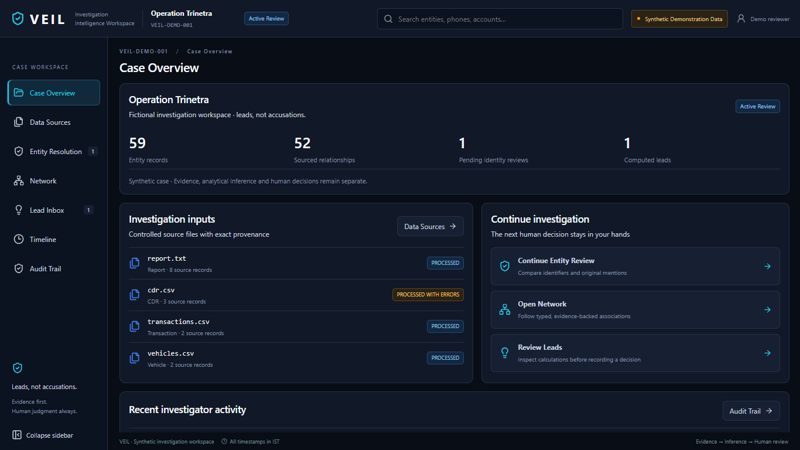
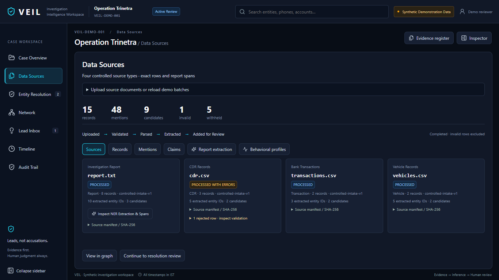
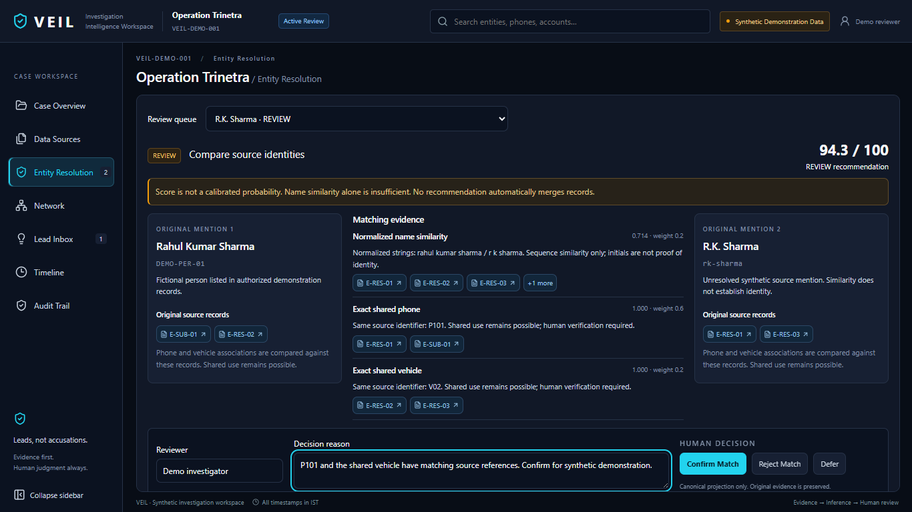
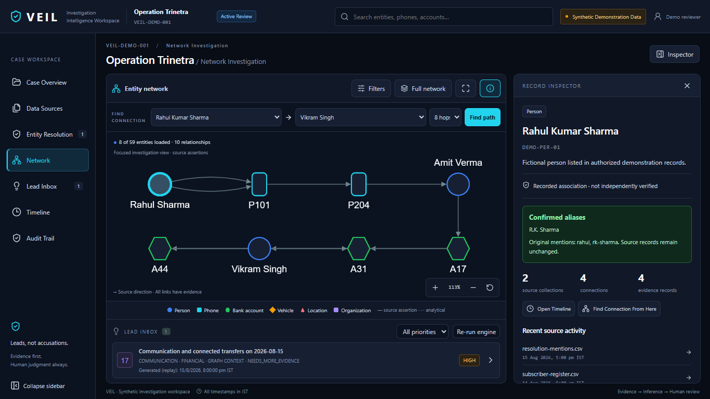
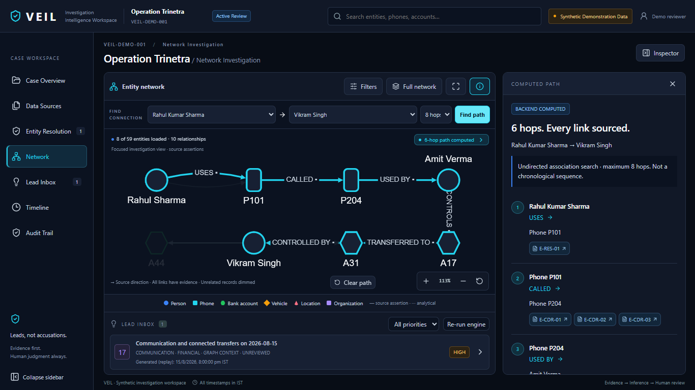
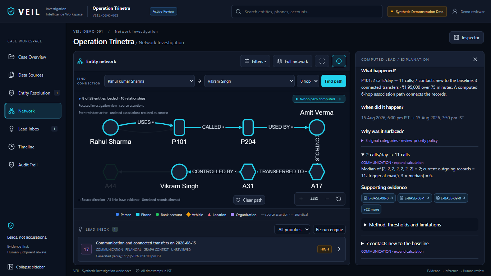
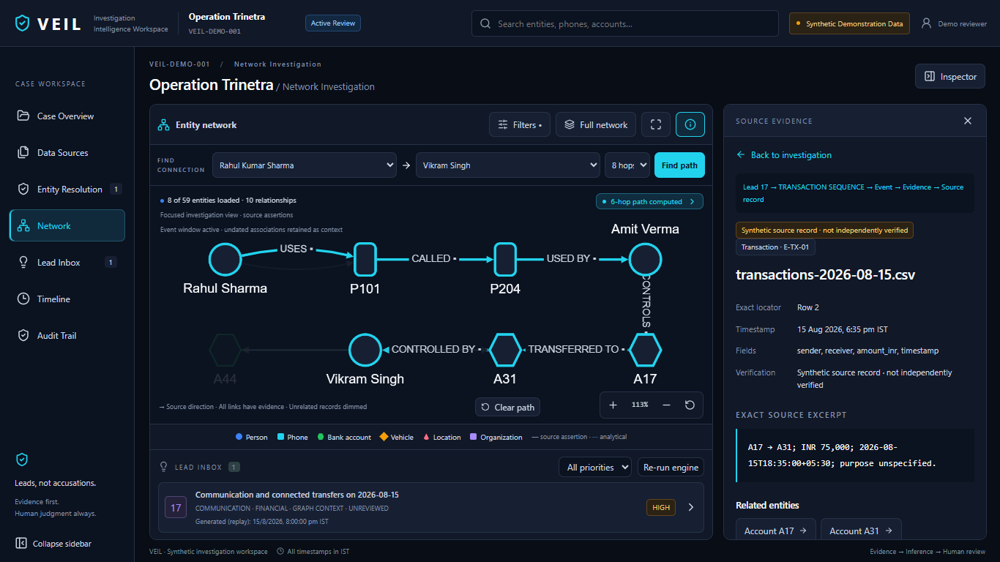
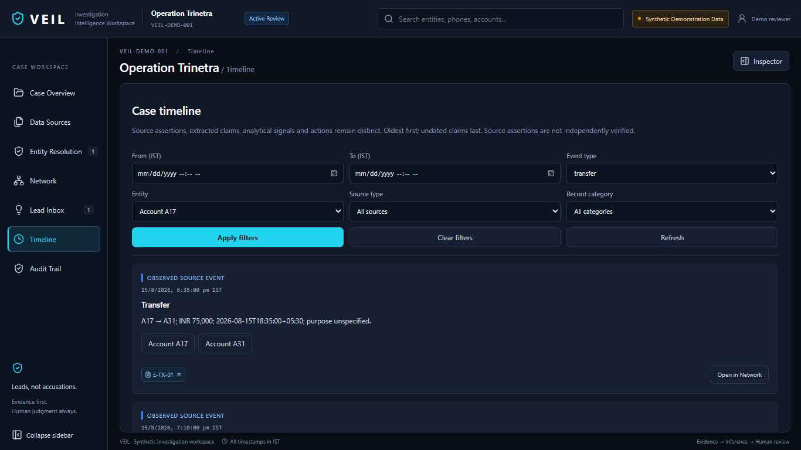
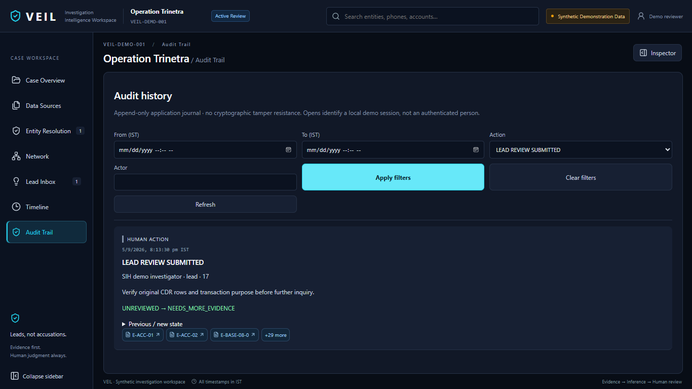

VEIL · SIH first-round evidence
Synthetic Demonstration Data. These screenshots are captured outputs, not live computation. Run the local application for the interactive evidence chain. VEIL generates leads, not accusations.
Case Overview

Four processed sources

Human-reviewed entity resolution

Network default state

Computed Rahul–Vikram path

Computed Lead 17

Exact evidence provenance

Timeline

Audit Trail

Captured API responses are in api/. Verification records are in ../redesign/.